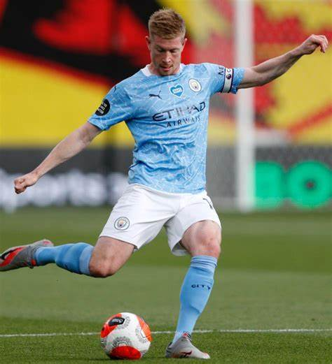

Joshua Kimmich has jumped onto this list with his sterling play over the past few years. defensive-minded player, Kimmich is one of the world's best right backs, but his move to midfield has taken his game to another level. He's now one of the best defensive midfielders in the world.
The 25-year-old is a great passer, is intelligent, and is one of world's best tacklers. He's a hard-nosed player, and is just the kind of guy Bayern will need to wear an armband in the future.
Virgil Van Dijk
Virgil Van Dijk is the best centre back in the world right now. While Manchester City's Ruben Dias has entered the fray and won the FWA Footballer of the Year Award for the 2020-21 Premier League season, Van Dijk still holds the
edge for me. Along with Sadio Mane and Mohamed Salah, the Dutchman has been a key part of Liverpool's turnaround in top flight competition.
Neymar
Neymar had a disappointing season just as he finally appeared to be putting his incredible ball skills to use and being productive in team.
PSG had an underwhelming campaign as Lille took home the Ligue 1 title. Neymar only made 17 league appearances, scoring nine goals, but his
skill lands him on this list as at any point he can be the most interesting player in the world.
Erling Haaland
At 20, Erling Haaland is the youngest player on this list, and he's the most likely to go to the top three
next season. The star has become an international sensation in a season-and-a-half in the Bundesliga
and has the looks of the next great European player. He was a star on the rise when Dortmund landed him from Red
Bull Salzburg in December of 2019 and he's passed expectations.
Sadio Mane
Sadio Mane has been a huge part of Liverpool's rebirth as a perennial threat to win the Premier
League and Champions League. During his five seasons, Mane has scored 74 Premier League goals in 162 games
and 97 in 218 total appearances. He's been a menace for opposing defenses and has been the spark that ignites The Reds' offense.
Kylian Mbappe
Kylian Mbappe is a goal-scoring whirlwind who keeps getting better. In fact, the 22-year-old has a legitimate chance to win the
Ballon d'Or in 2021 if his form continues. Mbappe stormed onto the soccer scene at the 2018 World Cup, bagging four goals as France
hoisted the trophy. Since then he's lived up to the hype that followed his performance in Russia.

Kevin De Bruyne
Kevin De Bruyne is the best player in the Premier League right now and it's not particularly close. When he is at his best,
there's no one who can top him, and Manchester City goes as he goes. When he missed time with a knee injury during
the 2018-19 season, City's attack just wasn't the same. The club won the domestic treble that year, but was an unstoppable force
when De Bruyne was on the field.
Robert Lewandowski
There is an argument that Robert Lewandowski should be No. 1 on this list after the year he had. I
considered doing that but I just couldn't do it. Here's what I will say: the 32-year-old Bayern striker may currently
be the greatest goal-scorer in the world, and he certainly deserves consideration at the top of this list.
Cristiano Ronaldo
Juventus limped to a fourth-place finish in Serie A this season, but Cristiano Ronald was still a goal-scoring force.
The 36-year-old may be saying goodbye to Italy this offseason as transfer rumors run rampant, but he's continued his incredible
form during his three years with the club.
Lionel Messi
Yep, even at 33, Lionel Messi is still the best footballer in the world. The greatest playmaker in soccer history continues to
amaze after 18 seasons as a professional. All he's done in 2021 is prove his greatness isn't close to waning. While Barcelona failed
to win La Liga during the 2020-21 season, Messi was not the problem.